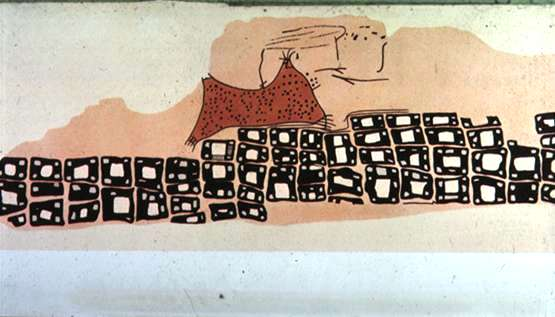
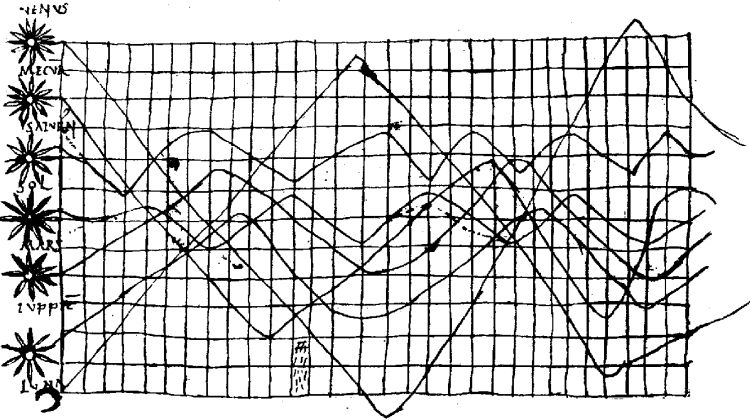
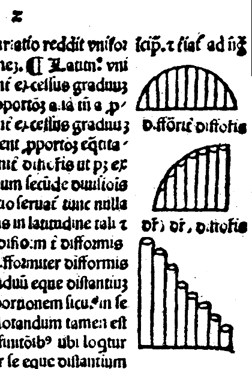
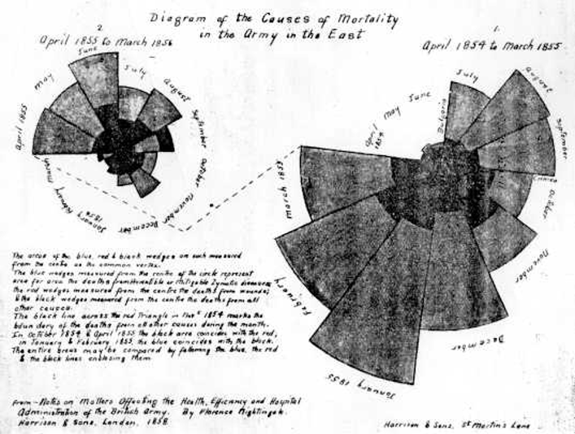

Metody statystyczne w badaniach społeczno-ekonomicznych
Wizualizacja danych
Rys historyczny
2025-02-07
Wizualizacja danych
znaczenie w badaniach naukowych
Metody graficzne są powszechnie wykorzystywane w analizie danych. Takie wykresy jak histogram, wykres rozrzutu, wykres liniowy czy wykres pudełkowy to wręcz standardy pozwalające na przeprowadzenie wstępnej analizy dostępnych danych. Dla właściwego wykonania takiej analizy niezbędne jest określenie podstawowych pojęć jak badanie statystyczne, populacja statystyczna oraz próba. Do wykonania prezentacji graficznej konieczny jest także zbiór danych. Pozyskane zbiory danych zwykle składają się z wielu zmiennych. Niektóre z tych zmiennych są wyrażane w postaci liczbowej, inne są charakteryzowane w postaci ciągów znaków lub napisów, a tylko dla niektórych z tych napisów można ustalić porządek. Wyniki pomiarów są związane z zastosowaną skalą pomiarową, a ta determinuje możliwości skorzystania w dalszej analizie z określonych metod statystycznych, a także pozwala wskazać na potencjalne zastosowania odpowiednich metod graficznych.
Rys historyczny
Prehistoryczne początki
- Najstarsze przykłady wizualizacji danych pochodzą sprzed około 12 000 lat
- Rysunki naskalne w jaskiniach przedstawiały proste zliczenia i grupowania danych
- Używano kresek i symboli do reprezentowania liczb i kategorii
ok. 6200 p.n.e.
Starożytne cywilizacje
- Około 1160 p.n.e. powstała Mapa Papirusu z Turynu - pierwszy udokumentowany przykład wizualizacji danych
- Mapa przedstawiała rozmieszczenie zasobów geologicznych
- Starożytni astronomowie tworzyli wykresy pozycji ciał niebieskich
Ruch planet - ok. 950
Średniowiecze i renesans
- Rozwój kartografii i map tematycznych
- W X wieku anonimowy astronom skonstruował wykres pozycji siedmiu ciał niebieskich w czasie
- Mapy stawały się coraz bardziej szczegółowe i precyzyjne
Wykresy słupkowe - XIV wiek
XVIII wiek - początki nowoczesnej wizualizacji
- William Playfair (1759-1823) uznawany za wynalazcę wielu popularnych form wykresów
- Wprowadził wykresy liniowe, słupkowe, kołowe i kołowe pierścieniowe
- Jego prace pokazywały zależności ekonomiczne i społeczne w czasie
XIX wiek - złoty wiek grafiki statystycznej
- Gwałtowny rozwój map tematycznych i grafiki statystycznej
- John Snow w 1855 roku zbudował słynną mapę epidemii cholery w Londynie
- Charles Joseph Minard opracował mapy przepływów z liniami o szerokości proporcjonalnej do ilości
- Florence Nightingale tworzyła innowacyjne wizualizacje wpływu higieny na śmiertelność w szpitalach
- Oryginalna wizualizacja rozkładu jazdy pociągów (Paris - Lyon, Etienne Jules Marey 1830-1904)
Wybrane porezentacje historyczne - XIX wiek

Zmienne: Wielkość armii, Szerokość geograficzna, Kierunek marszu, Temperatura, Czas
Florence Nightingale (1830-1831)

{kind=link}

John Snow (1854)
{kind=link}
Zlokalizowanie źródła rozprzestrzeniania cholery. Londyn (1854)
Trasa, godziny odjazdów i przyjazdów, kierunek i prędkość jazdy, miejsce i czas postoju, miejsca mijania
Przełom XIX i XX wieku
- Rozwój druku trójkolorowego umożliwił wykorzystanie koloru jako dodatkowego kanału kodowania danych
Połowa XX wieku
- Pojawienie się komputerów przyspieszyło rozwój wizualizacji danych
- W 1955 roku Darrell Huff opublikował “How to Lie with Statistics”, zwracając uwagę na możliwości manipulacji danymi
- Jacques Bertin w 1967 roku wydał “Semiology of Graphics”, wprowadzając teorię znaków graficznych
Lata 80. XX wieku - rewolucja komputerowa
- W 1981 roku pojawił się pierwszy komercyjny graficzny interfejs użytkownika
- Arkusze kalkulacyjne zrewolucjonizowały tworzenie wykresów i grafik
- Umożliwiło to szybkie generowanie wizualizacji bez ręcznego rysowania
Przełom XX i XXI wieku
- Rozwój internetu i big data zwiększył zapotrzebowanie na zaawansowane wizualizacje
- Powstanie narzędzi do interaktywnej wizualizacji danych, takich jak Tableau i Power BI
- Wzrost znaczenia wizualizacji w dziennikarstwie i komunikacji naukowej
Współczesne trendy - interaktywność
- Rozwój interaktywnych dashboardów i wizualizacji
- Możliwość eksploracji danych przez użytkownika w czasie rzeczywistym
- Przykład: interaktywne mapy rozprzestrzeniania się COVID-19 w New York Times
Współczesne trendy - AI i automatyzacja
- Wykorzystanie sztucznej inteligencji do automatycznego generowania wizualizacji
- AI pomaga w interpretacji danych i sugerowaniu najlepszych form wizualnych
- Rozwój narzędzi do przetwarzania języka naturalnego w analizie danych
Współczesne trendy - immersyjne doświadczenia
- Wykorzystanie technologii AR (Augmented Reality) i VR (Virtual Reality) do wizualizacji danych
- Tworzenie trójwymiarowych, interaktywnych przestrzeni danych
- Umożliwia to nowe sposoby eksploracji i zrozumienia złożonych zbiorów danych
Współczesne trendy - wizualizacja w czasie rzeczywistym
- Rozwój Internetu Rzeczy (IoT) i przetwarzania brzegowego umożliwia wizualizację danych w czasie rzeczywistym
- Zastosowania w monitorowaniu procesów przemysłowych, ruchu miejskiego czy zmian klimatycznych
- Pozwala na szybkie reagowanie na zmieniające się warunki
Przyszłość wizualizacji danych
- Dalszy rozwój technik AI i uczenia maszynowego w analizie i prezentacji danych
- Zwiększenie dostępności narzędzi do wizualizacji dla nie-ekspertów
- Rosnące znaczenie etyki w prezentacji danych i przeciwdziałanie dezinformacji
Historia wizualizacji danych to fascynująca podróż od prostych rysunków naskalnych do zaawansowanych, interaktywnych doświadczeń. Wraz z rozwojem technologii, wizualizacja danych staje się coraz bardziej istotnym narzędziem w nauce, biznesie i codziennym życiu.
Wybrane rodzaje wykresów
Histogram
Wykres słupkowy
Wykres kołowy i pierścieniowy
Wykres pudełkowy (boxplot)
Wykres wiolinowy
Wykres łodyga-liść
Wykres liniowy
Wykres punktowy
Wykres rozrzutu
Wykres zmiany
Wykres współrzędnych równoległych
Wykres radarowy
Wykres mapowy (kartogram)
Kartodiagram
Wykres mozaikowy
Wykres obrazkowy
Twarze Chernoffa
Wykres bąbelkowy
Macierzowy wykres rozrzutu
Wykresy regresji
Wykresy funkcji gęstości
Wykresy ciepła
Wykres gwiazdowy
Wykres róża Nightingale
Krzywa Lorenza
Wykres słonecznikowy
Wykres lizakowy
Piramida wieku
Wykres konturowy
Wykresy z wynikami wnioskowania
Wybrane historyczne wizualizacje
[Wizualizacja…- ebook] (https://sbc.org.pl/dlibra/publication/942581)
Grzegorz Kończak, seminarium doktoranckie